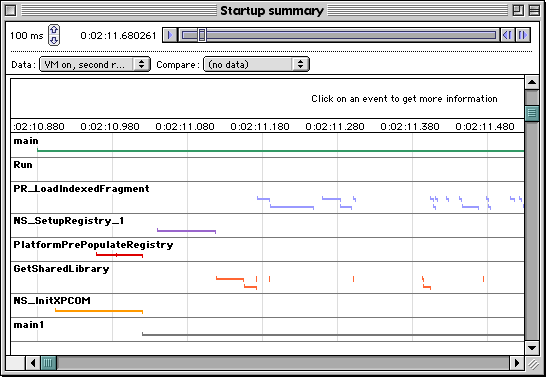

Measuring Mac Performance
- Introduction
- What are all these Mac builds?
- Deciding what to profile
- Should I profile a debug or an optimized build?
- Get to know the code
- Preparing to profile
- Performance Tools
- Mac Classic Tools
- Mac OS X Tools
- Available tools on Mac OS X
- Resources
Introduction
The Mac Mozilla product has some significant performance problems in various areas, often because of platform performance idiosyncracies (e.g. a relatively slow filesystem), poor platform-specific code, or code that is just slow everywhere. Some areas in which we know Mac Mozilla to be slow are:
- Startup (library loading, file I/O)
- Text measurement (getting text width during layout reflow)
- File I/O (e.g. disk cache)
You can find a list of all bugs filed on Mac performance by doing a Bugzilla Query.
We can always use help with performance tuning on Mac. This document describes some of the tools available for performance work. More information on performance work on Mac applications is available in an Apple technote.
What are all these Mac builds?
We have a number of different Mac builds currently. They are somewhat confusingly named. Carbon a set of APIs which are implemented on both Mac OS 9 (via CarbonLib) and Mac OS X. CFM (short for the Code Fragment Manager) is the Mac OS library loader, and again is present on both Mac OS 9 and X. CFM loads libraries which use the PEF (Preferred Executable Format), a format whose use is discouraged on Mac OS X. Mach-O is the native library format on X, and has performance and footprint advantages.
Mac OS 8, 9 "Classic"
- Library format: PEF (Preferred Executable Format) aka CFM (Code Fragment Manager)
- Mac widget, Mac GFX. Event handling uses
WaitNextEvent() - Built via CodeWarrior projects and the Mac build scripts
Mac OS X "CFM" (sometimes "Fizzilla", "Carbon")
- Library format: PEF (Preferred Executable Format) aka CFM (Code Fragment Manager)
- Mac widget, Mac GFX built with
#if TARGET_CARBON - Event handling uses
WaitNextEvent(), some Carbon Events - Built via CodeWarrior projects and the Mac build scripts
Mac OS X "Mach-O"
- Library format: Mach-O
- Hybrid of Unix and Mac builds; mainly Mac Widget and GFX, Unix NSPR. Still uses much of the Carbon API.
- Built via Unix makefiles.
XP_MACOSXis defined.
Mac OS X Cocoa
- Essentially a new port; will use Cocoa for widget, Quartz for GFX. Closer to Mac OS X "native".
- Library format: Mach-O
- Hybrid of Unix and Mac builds, built via makefiles.
Deciding what to profile
What should you profile? What is "too slow"? This is a hard question, and often the stumbling block of profiling efforts. There are various approaches here which are useful:
- Comparison to other applications on the same platform.
- Comparison to Mozilla on Windows
- Operation is too slow from a user perspective
- Code inspection reveals possible poor performance area
- "Hunch" that some code might be a bottleneck
Often performance work is a combination of data collection, debugging, and iterative code changes. Of course the goal is to find the minimum set of changes for the maximum speed win, but that's not easy.
Performance work can also be a big time suck, and something that is never finished. To do it in a manageable way requires some objective measurement of results; this often has to be simply time to do some user-oriented task.
Should I profile a debug or an optimized build?
Ideally, you should collect profiling data on an optimized build. A debug build is
compiled without optimizations, and often has debug code which can strongly skew performance
results, including data-verification code, and printfs. Gecko is known to
have some debug-only calls that are slow.
That said, I often collect profile data using the Instrumentation SDK because I like to be able to easily debug in the same build that I profile with, and debugging is much easier when building without optimizations. I also believe that if you can get a debug build to be fast enough on your super-duper developer machine, end users are going to experience better performance on lower-end machines.
Get to know the code
To be effective when profiling, you have to understand the various runtime environments that your code (and often the profiler's code) may be running in:
- NSPR threading is cooperative on Mac, using a hand-rolled threading implementation
that uses
setjmp/longjmp - Some bits of code run at interrupt time:
- Async file I/O callback (NSPR)
- Timer task (NSPR)
- Open Transport notifiers (NSPR and necko)
- Watch cursor VBL task (in gfx)
On Mac OS X, the "interrupt time" code above actually runs in separate MPTasks (layered over pthreads). There is a difference in behaviour on Mac OS X in that these tasks don't necessarily run to completion; i.e. they may be preempted by the main thread, or another task. They can also run concurrently on multi-CPU machines.
Understand gross program behaviour
Mozilla is a big application, and very complex. Depending on what kind of code you are profiling, you may have to work to understand parts of the Mozilla architecture that are not immediately obvious from reading the code. Examples are:
- Threading (socket and file transport threads, PLEvents in necko, XPCOM)
- Chrome building (brutal sharing, fastload etc in XUL code).
- Layout (paint suppression, reflow batching etc in
PresShell). - Drawing (double-buffering in the View Manager)
For example, most of our window building code (for the first window) is asynchronous; we fire off
a chrome:// URL for the window's chrome, and then do the actual work of building the
window content in the handlers for PLEvents, which have been proxied over to the main thread from
necko's file transport threads. Don't expect to be able to turn profiling on for a section of code
that just builds the main window; because this is asynchronous, you'll end up profiling code that
does event handling and other stuff.
Another implication of this type of design is that performance problems are not always caused simply by code that takes too long to run; they can also be caused by problems like resource contention between threads (i.e. threads spend too long waiting), or by latency problems (e.g. too long a delay between necko posting a PLEvent, and it being processed on the main thread).
Understand unavoidable time sinks
When profiling, you're going to quickly notice that we spend a lot of time in certain routines:
- Event handling:
WaitNextEvent()innsMacMessagePump::GetEvent() - Spin loop:
WaitNextEvent()in_MD_PauseCPUin NSPR - Library loading: various
PR_LoadLibrarycalls from XPCOM, security, AIM. - Reading from disk
In part, it is inevitable that time will be spent in these parts of the code. But there may be important performance gains to be had by minimizing that time (read less from disk, improve locality of reference in libraries etc.).
Preparing to profile
When profiling, it's important to work on a machine, and a build that's in a known state, otherwise you'll be unable to compare different sets of results.
Maintain a consistent machine state
- Virtual Memory on to 1Mb > physical memory (Memory control panel)
- Virus software disabled
- Plenty of disk space
- No other applications running, no audio CDs playing etc
Maintain a consistent build state
- Optimized build
- Resolve aliases in Components and Essential Files folders
(DropStuff then expand them) - Modern skin, clean profile
Caveats
Beware of program behaviours that make the first and subsequent actions behave differently:
- First run of a build is different (XPCOM autoregistration, chrome registration)
- First run of a build in a profile is different (Fastload for the first of each window type)
- First instance of a window type in a run is slower than subsequent (XUL cache/brutal sharing)
- First and second run are different (OS disk and library caching)
- First and subsequent loads of a page may be different (disk/memory cache)
- Different behaviour on different machines
Performance Tools
Performance testing does not have to involve diving into low-level performance tools. There are a number of high- and mid- level tools and tecniques that you can use:
User-level performance
- Supplied tests (page-load, startup, new window)
Simple code investigation
- Use high- or low-level debugger to see how often code is called, and understand call patterns (
tvbin MacsBug) - Use
printfto see when things are called. Hack in timing data withPR_Interval. Hack in the stack walking code fromnsTranceRefcnt. - Write temporary code -- accounting, instrumenting QI etc.
- Change the code -- comment code out, see how fast it runs.
- Change the input data -- minimal XUL, reduced CSS etc.
- Use built-in tools
MOZ_TIMELINE- Paint/update flashing (
nsWindow.cppon Mac) - Trace-malloc etc.
If necessary, move to dedicated profiling tools
- Mac OS 9: MW Profiler, Instrumentation SDK, Chronoscope
- Mac OS X: Sampler, QuartzDebug, fs_usage, top etc.
Mac Classic Tools
There are two main tools available for Mac performance measurement. They work in quite different ways, and give different types of data (though there is some overlap). As a result, you may find yourself using both to investigate performance problems.
Metrowerks Profiler
The Metrowerks Profiler is a code-instrumenting profiling
tool which requires that you rebuild the sources with the profiling turned on. The compiler then
inserts calls to __PROFILE_ENTRY() at the start of each function, and to
__PROFILE_EXIT() at exit points.
Note: You could hijack __PROFILE_ENTRY() and __PROFILE_EXIT()
by implementing them yourself if you wanted to roll your own profiling or code coverage tools.
To build with profiling turned on, do one of the following:
-
In
mozilla/build/mac/IDE_options.h, change#pragma profile off
to#pragma profile on
IDE_options.his included in every source file in the project via the prefix files specified in project preferences. So changing this will turn on profiling for the entire application. You don't want to actually collect data for the whole app (trust me), so if you do this, you should sandwich the code your are interested in withProfilerSetStatus()calls.You should also set the
$PROFILEflag in the perl scripts BuildNGLayoutDebug.pl/BuildNGLayout.pl:$PROFILE = 1;
When this flag is on, the scripts make an alias to
ProfilerLibinEssential Files, and build a profiling target of NSRuntime.mcp, which exports the profiler functions.Note: Profiling was set up to work in a debug build. If you want to profile an optimized build, you'll have to make an optimized target in NSRuntime.mcp which exports profiler symbols.
-
Put
#pragma profile onin the prefix file for the project(s) you want to profile, after the#includeof whatever file indirectly includesIDE_options.h. You can't just use the project preference checkbox, because this is overridden by the#pragma.Note that if you use this method, functions called in other libraries won't get profiled; you'll see time attributed to functions in this library, but you won't be able to attribute that to calls out to other modules.
The second thing you need to do is to start and stop the profiler system. You
can do this via the calls in
ProfilerUtils.c,
which are already hooked up to the
nsMacMessagePump
and keyed off Caps Lock. Or you can call ProfilerInit(), ProfilerDump()
and ProfilerTerm() (from <Profiler.h>) yourself.
Having built with profiling on, and found the ideal spots for ProfilerSetStatus() calls,
run the app and collect some data. Hopefully, you'll end up with a data file that's not too large;
the Profiler viewer application tends to choke on data files more than about 4Mb in size.
This is the kind of view you get with the Metrowerks Profiler:

The data show the function name, number of times it was called (Count), the time spent in just this routine (Only and %), the time spent in this routine and funtions that it calls (+Children and %), and the Average, Minimum and Maximum time spent in this routine.
You can view the data in Summary format (just a flat list of functions), in Detailed format (which shows call stacks, but which can thus list a function in more than one place), and as time spent per Object (for C++ code). You'll switch mainly between the first two modes to get a good feel for the data, and sort by % (only) or % (+Children) to get the most time-consuming calls to the top.
Note that since this is an intrusive profiling method, the data collected are somewhat biased. This profiler seems to give weight to small functions that are called frequently, so these will show up high in the list; be aware of this before you jump in and starting trying to optimize such functions.
The MW Profiler has its limitations. It gets confused by threading, so you might find that the total time does not add up to 100%. It's uphappy with a lot of data, so it useless for 'big' performance problems (e.g startup time). It's intrusive, so it can bias the results by weighing frequently call small functions. Finally, you only get a fairly restricted view on your data; flat, call-chain or by object. It's hard to view all callers of a function, for example.
Instrumentation SDK
Apple's Instrumentation SDK is a different kind of profiling tool. To use it you have to put instrumentation points in the code (or instrument the imports or exports of a CFM library, which is more advanced), and, after running and collecting data, you can see a real-time graph of where the time is spent. You can also collect a variety of other types of data using this SDK, such as histrogram, growth and tally statistics.
To get instrumentation going in your build, follow these steps:
- Download the SDK from Apple
- Install the bits of the SDK as directed:
- "InstrumentationLib" into your Extensions folder
- "Instrumentation f" to the root of your boot volume.
I usually color-code the spoolers with labels to make it clear what is what. We'll be using these: StatSpooler, TraceSpooler, ClassSpooler. - Copy "Interfaces & Libraries" to your Metrowerks Codewarrior "MacOS Support" folder.
To instrument C++ code, we can use some helpers in
InstrumentationHelpers.h.
This file provides the macros INST_TRACE, INST_TRACE_MIDDLE
and INST_TRACE_DATA that instantiate a stack-based class, whose ctor logs
the start event, and dtor logs the end event. In C code, you'll have to call use the macros
in <InstrumentationMacros.h>, which require you to put calls at both function entry
and exit points.
To get the mozilla/lib/mac/Instrumentation folder in CVS, you need to check it out explicitly
(since it's not in the SeaMonkey module). In MacCVS, use the "Checkout module to", and enter that path.
Now it's time to instrument some code. Let's say we want to instrument method Foobar().
New lines are in red:
#include "InstrumentationHelpers.h" ... void nsSomeClass::Foobar() { INST_TRACE("Foobar call"); ... }
Note that INST_TRACE() takes a string, which is used to identify traces from
this location in the viewer. You can use a colon-delimited string here
to get a hierarchy in the viewer, but be careful not to copy-paste
method names with double colons ("nsSomeClass::Foobar"). The backend gets
unhappy with what it sees as empty category names.
Once you've added calls to the Instrumentation system, you need to link that shared library
with the InstrumentationLib stub library. So find InstrumentationLib in
the Instrumentation headers and libraries that you copied into CodeWarrior's "MacOS Support folder",
and add that library to the project. At runtime, the library will dynamically link
with the "InstrumentationLib" library in the Extensions folder.
Deciding where to put instrumentation points can be tricky, and it really depends on the kind of problem you are looking at. One general approach is to go top-down; start with the root call of a time-consuming subtree, then work your way down, collecting data all the while, and sprinking instrumentation points around where they can give you the best feel for where time is being spent. Ideally, you'll end up with a smallish number of instrumentation points that you can use to say where almost all the time is going.
Once you're built with instrumentation points, collect data like this:
- Fire up the data spoolers StatSpooler, TraceSpooler, ClassSpooler. These will spool data from the instrumentation backend to disk files as you run.
- Run Mozilla, and exercise the code you instrumented
- Quit Mozilla
- Use the "Quit Spoolers" AppleScript to quit the spoolers
- Run the SpoolPackager to package the separate data files into one data file.
Note: this clobbers any existing files called "Instrumentation Data" in this folder. - Open the Instrumenation Viewer, and use it to look at the new data
Note: the viewer remembers the last data file that you viewed, and opens that with the view file by default. You often have to explicitly open your new data file.
The Instrumentation Viewer is best learned by reading the documentation that comes with the SDK. You'll be using Time Line views a lot, and possibly trace histograms to see time summaries (use text histograms).
This image shows a sample view for Mozilla startup, using a Time Line viewer.

Performance evaluation with the Instrumentation SDK is a much more investigative process than with the Metrowerks profiler, because you have to go in an instrument the code by hand. You'll also find the debugger a useful companion, to find out where various routines are being called. As long as you don't instrument a frequently called routine, this profiler has low overhead, and gives accurate results. It's excellent for understanding timing related issues, such as synchronization between threads, or event latency issues.
Chronoscope
Chronoscope is another instrumenting profiler, which, for now, only works on Mac OS 9.
Like the MW Profiler, it uses the __PROFILE_ENTRY() and
__PROFILE_EXIT() hooks generated when the compiler is generating profile information.
As long as you use the Chronoscope API calls to instrument NSPR thread creation and deletion,
and context switching (see this bug
for a patch), then Chronoscope is thread-savvy, and will allow
you to see function timing for each thread independently. Chronoscope will also show
when interrupt-time code is running (e.g. async file I/O callbacks).
To obtain a copy of Chronoscope, go to the Chronoscope home page and look for the download link, or go directly to the Chronoscope page on SourceForge. Building from source will get you the most up-to-date version of the tool. Because this tool is still in progress, you should have MacsBug installed when using it.
To start profiling with Chronoscope, do a build with profiling turned on, as described in the
MW Profiler section above. Edit
ProfilerExport.exp,
replacing the function names under "#utils" with
ChronoInit ChronoGetStatus ChronoSetStatus ChronoTerm ChronoTask ChronoEnterInterrupt ChronoLeaveInterrupt ChronoCreateThread ChronoDeleteThread ChronoEnterThread
and add the "ChronoscopeStubs" library to the project, removing the ProfilerLib library.
To initialize the profiler, add a call to ChronoInit() somewhere, like the beginning of main():
#if __profile__
OSErr err = ::ChronoInit( PR_GetCurrentThread(), /* main thread */
NULL, /* output file; NULL uses default */
16000, /* number of unique functions */
100, /* max stack depth */
10000000, /* max accumulated samples */
kChronoOverheadIgnore /* profiling overhead accounting (ignored) */
);
if (err != noErr)
DebugStr("\pChronoscope failed to init");
#endif
Chronoscope needs to spool data to disk; add calls to ChronoTask() in places
that will get hit between large chunks of profiled code (e.g. in the event loop). When you're
done, call ChronoTerm() to have Chronoscope finish writing data to disk.
See patches in bug 111024
for changes that do this already.
Once you have your build set up, use ChronoSetStatus() to turn profiling on
for the code that you care about, and run the app. If Chronoscope complains about running
out of data collection space, increase the 'max accumulated samples' parameter to
ChronoInit(), and/or sprinkle more ChronoTask() calls around in the code.
Hopefully, you'll get a big data file (they can easily grow to several hundred megabytes). Drag this onto the ChronoViewer application, and it will load the file, and start showing traces:

See the Chronoscope home page for documentation that explains how to interpret these traces.
Chronoscope's advantages are that it shows complete and correct information on the graph and timing of function calls, including interrupt code (assuming that you're running it on the cooperatively threaded Classic Mac OS), and fairly accurately adjusts the output for its own profiling overhead. It does, however, have a high runtime overhead, and is not quite beefy enough to deal with a data file for a full Mozilla run.
Memory Leaks
Contrary to popular opinion, you can usefully do memory leak work on Mac OS 9. The refcount balancer works well, and, in addition, you have a number of options for memory allocators and heap-inspection tools.
Refcount balancer on Mac
As described on the refcount balancer page, to set the necessary environment variables on Mac, make a text file called "environment" in the Mozilla folder, and put in the variables. To run the various perl scripts, get the MPW Perl tool, and use MPW as your scripting environment. After setting the current folder to that contining the script and data files, all the perl commands listed on that page should work just fine.
Other Mac OS 9 resources
Mac builds also allow you to inspect and fiddle with aspects of memory management that make bug hunting and leak tracking a little easier.
Metrowerks ZoneRanger allows you
to inspect the application heap, and memory blocks that are allocated in temporary memory (since
each of these is a heap zone). Note that you can't see down to the level of individual malloc'ed blocks,
since we have our own
malloc implementation.
If you want to have ZoneRanger show you every block that is allocated, you can rebuild
the "MemAllocatorNewPtr.o" target of the
MemAllocator.mcp
project (you'll have to fix up some linkage issues if you try this right now). This version of
the allocators does a NewPtr for every malloc, which is very slow, and for which you'll have to
give Mozilla a much larger partition. But it does let you track individual blocks, and use things
like hs in MacsBug to check for heap corruption.
Mac OS X Tools
Mac OS X comes with a number of developer tools for performance evaluation and testing, some of which are sufficient to replace some of the home-grown mozilla tools. The Mac OS X performance document talks about most of them.
Available tools on Mac OS X
- Interactive tools
- Sampler -- sampling profiler, can also show heap allocations and file system calls
- MallocDebug -- for tracking allocations and leaks
- ObjectAlloc -- for tracking allocations
- QuartzDebug -- for examining screen drawing and window usage
- Command-line tools
fs_usage-- logs file system calls (likestrace)fc_usage-- system call stasticstop-- CPU usage, memory footprint, eventsvmmap-- shows virtual memory regions usedgprof-- instrumenting profiler uses gcc hooks; generation of order files.heap,leaks,pagestuffetc.
Sampler
Sampler is a sampling profiler that shows which functions are on the stack when sampling took place; it
thus gives a statistical picture of where the app spends time. There is a command-line version called sample.
Sampler can also track
- Memory allocations (bloat attributed to a call stack)
- File system calls
- User-specified routines
Sampler is easy to run, and is a good way of getting a first impression of where the app is spending time (especially good for infinite loop bugs). It works for CFM and Mach-O builds, and supposedly detects leaked cycles and structures.
However, it can be unstable (finding memory leaks, and tracking user routines always crashes for me). It also suffers from sampling errors typical of sampling profilers; it can miss small functions, while placing undue emphasis on functions during which preemption occurs. It also has a fairly low sampling resolution (~10ms). For leak tracking, its memory tracking doesn't understand Carbon Handles, so will miss some leaks.
MallocDebug
MallocDebug is a goo tool for investigation of memory use, leaks, block trashing. MallocDebug can show:
- Extant memory with allocation stack (does not show freed memory)
- Memory allocated since a given point in time
- Leaks. Uses a conservative GC to find unreferenced blocks of memory.
- Definite leaks--no references to any address in a block
- Possible leaks--no refs to the start of the block, but refs exist to the middle of the block.
- All leaks--union of definite and possible leaks.
It optionally overwrites freed memory with 0x55, and puts markers before and after each allocated buffer
to detect buffer over- and underflows; it will write to the console to notify you of smashed blocks.
To find out more about where your program is trashing memory, you can run under gdb with the
MallocDebug library. MallocDebug works for CFM and Mach-O builds.
Since MallocDebug uses a conservative GC for leak tracking, it does miss some leaks: cycles of leaked objects, and any non-root objects in a leaked object tree. Other disadvantages are that it can give partial stack traces because it seems to fail to get symbols for many routines, and it can be unstable.
ObjectAlloc
ObjectAlloc is a program that tracks all allocations your program makes over time, and can show, for any time point, a list of total, and extant allocations, with call stacks and block sizes. It seems to work pretty well, though again does suffer from failed symbol lookups, and its results can contain noise (for CFM builds) from the CFM launcher.
QuartzDebug
This program is mainly useful for showing when applications draw on screen, and can be used to discover over-drawing problems. It is also capable of displaying a list of all the windows in use, and their memory overhead (mainly backing store size).
Command-line tools
There are several command-line tools that either duplicate functionality in the tools described above, or show other kinds of performance data.
top- Shows CPU usage, various measure of resource usage.
- Show process size (
-wfor extras) - Show event handling (
-eor-dfor deltas)
- Show process size (
fs_usage-
Shows file system usage. Have to run as root. Use
fs_usage pid -w > outfile sc_usage-
top-like utility that shows cumulative counts of system calls and page faults. vmmap- Shows virtual memory regions associated with the process, including code and data, stack, malloc heap, the access permissions of those memory regions etc.
heap- Shows allocated blocks, like MallocDebug
leaks-
Show leaked blocks (unreferenced), optionally showing stack traces for each allocation, if the environment
variable
MallocStackLoggingis set. Similar to Sampler's leak tracking. malloc_history-
Shows stack traces for each allocation if
MallocStackLoggingis set. pagestuff- Tool for analysing a compiled binary, showing what symbols are present in each logical page of the file, or every section of the file. Useful to check the outcome of code ordering, or to look for linker issues.
Resources
Technotes
Mac OS 9
- FL 16: File Manager Performance and Caching
- TN 1059: On Improving Open Transport Server Performance
- TN 1174: Optimization strategies for Mac OS
- TN 2028: Threading Architectures
Mac OS X
Downloads
- Instrumentation SDK
- Chronoscope
- Interarchy (traffic watching)
- Peek-a-Boo (CPU usage on Mac OS 9)
Simon Fraser
<sfraser@netscape.com>